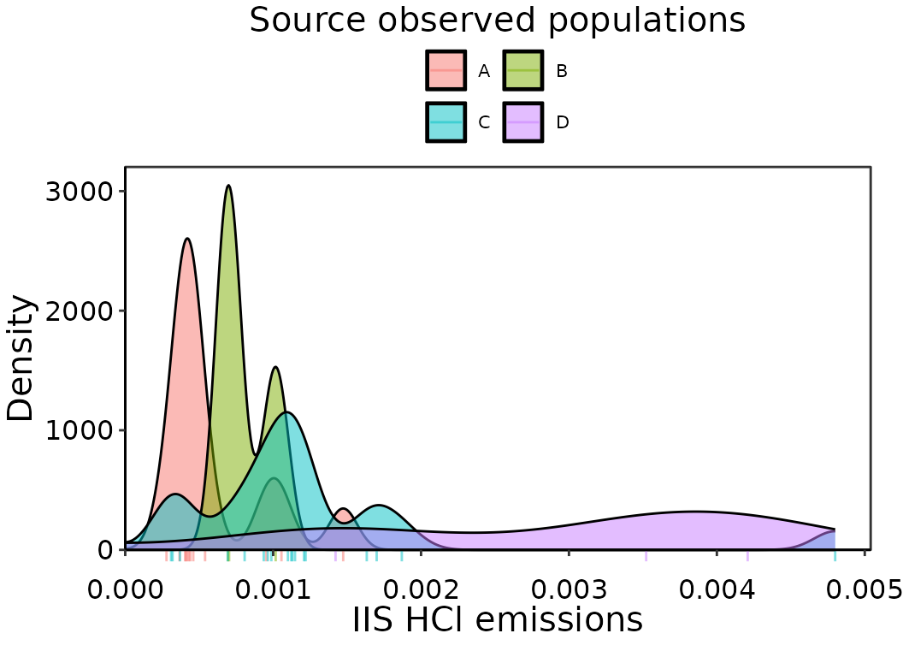
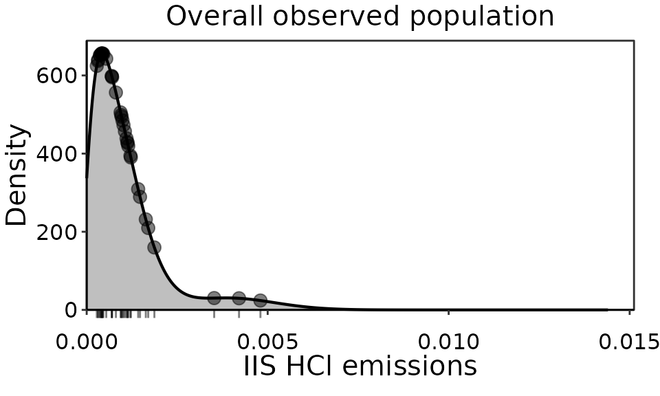
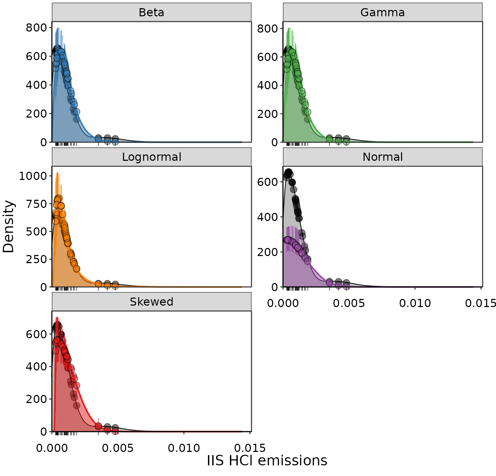
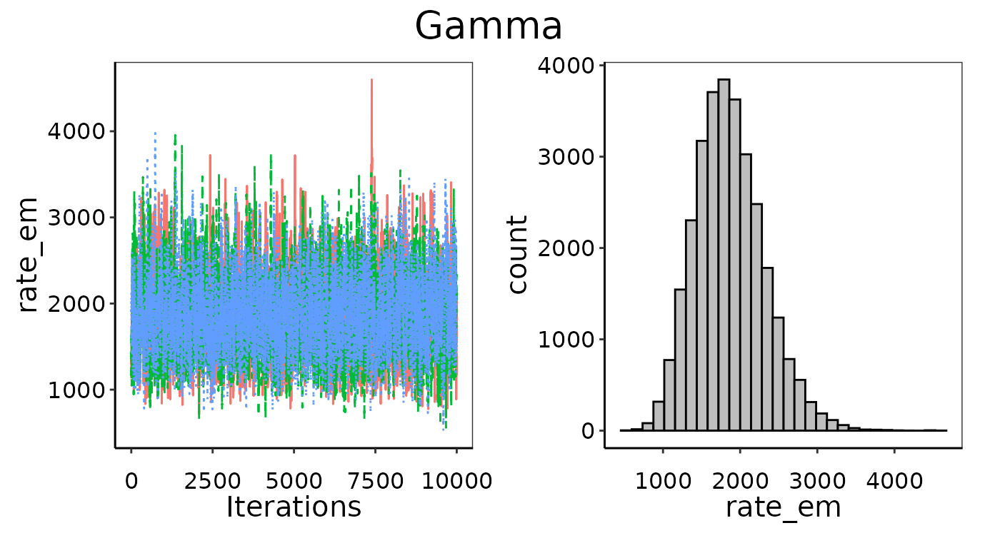
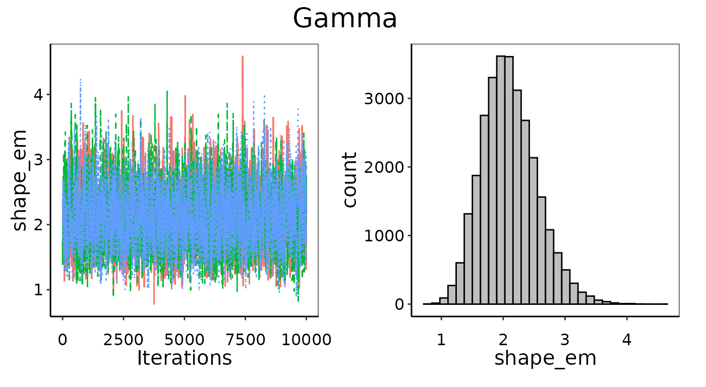

Introduction
This vignette describes the use of the Bayesian_UPL()
function. The goal of Bayesian_UPL() is to provide a
flexible and consistent method of calculating Upper Predictive Limits
(UPL) for any type of emissions data to determine National Emissions
Standards for Hazardous Air Pollutants (NESHAP) for existing and new
sources.
Current UPL methods are only applicable to emissions data that are
distributed Normally, Skewed, or Lognormally. The UPL for Normal data
can be calculated analytically with Normal_UPL() using the
mean, standard deviation, and t-statistic. However, there are
no equivalent analytical solutions for Skewed or Lognormal UPL
calculations. Instead, Lognormal_UPL() uses a Gram-Charlier
Type A Series expansion to approximate the density distribution and
determine the arithmetic mean of future samples, and
Skewed_UPL() uses the skewness and kurtosis moments to
iteratively adjust the t-statistic until the desired
significance is achieved. All three UPL methods assume the distribution
explicitly and without uncertainty, and assume the emissions are
observed perfectly and independently.
By operating in a Bayesian framework, we can use the same method of deriving the UPL while agnostic to the type of distribution, but also dramatically increase the choices for the distribution. Bayesian inference also benefits from fewer assumptions and better uncertainty quantification. This allows for more accurate representation of emissions data and better transparency and metrics of fit to support the UPL calculation.
The Bayesian_UPL() uses a Monte Carlo Markov Chain
(MCMC) sampler (a Gibbs sampler implemented via JAGS) to fit probability
distributions to emissions data. You will need to install JAGS before being
able to use Bayesian_UPL() or
run_likelihood(). For example, when using a Normal
distribution, this entails estimating the mean and standard deviation
which define the distribution. Unlike the Normal_UPL()
analytical solution, we don’t merely get a point-estimate of the mean
and standard deviation, but instead derive a posterior distribution that
describes the full probability for the mean and standard deviation. This
allows us to better quantify the uncertainty in the predicted
probability distribution for any future emission observation.
Numerous probability distributions are already implemented in R
stats and JAGS, and any distribution that isn’t, or any
combination of distributions, can be coded manually in JAGS if needed.
For any probability distribution, the UPL is calculated by taking the
99th percentile of the average of new draws (usually 3 new
runs to be comparative to a typical compliance test).
Example: HCl Emissions from Integrated Iron and Steel
Step 1: Load and plot the emissions observations
Let’s look at an example data set of HCl emissions from Integrated
Iron and Steel. This data set as provided is already the set of top
performers in the industry, so there is no need to run
MACT_existing() to select the data. The first step is to
load and plot the emissions data.
dat_emiss = read.csv('Example_data2.csv')
emission_mean = mean(dat_emiss$emissions)
dat_means = summarize(dat_emiss, means = mean(emissions), counts = n(),
.by = 'sources')
dat_means$sources = as.factor(dat_means$sources)
dat_means$sources = fct_reorder(dat_means$sources,
dat_means$means, .desc = FALSE)
dat_emiss$sources = factor(dat_emiss$sources,
levels = levels(dat_means$sources))
dat_means = arrange(dat_means, means)Take a quick look at the average emission for each source in the data set:
| Source | Average emission | No. of test runs |
|---|---|---|
| A | 0.000603 | 12 |
| B | 0.000805 | 3 |
| C | 0.001240 | 18 |
| D | 0.003050 | 3 |
Next we want to look at density plots of the emission observations.
Our goal is to fit a probability density that best describes the data,
from which we can determine the UPL. In order to know the probability
density is a good match for our emissions data, we want to look at the
empirical density of the observations. For this example we will plot the
density using ggplot2::geom_density() by
source with a lower bound of 0 since negative emissions are
impossible. The UPLforOAR package includes several
ggplot2 themes designed for density figures. The figure
below uses multi_source_theme().
ggplot(aes(emissions, fill = sources), data = dat_emiss)+
geom_density(alpha = 0.5, trim = FALSE, bounds = c(0, Inf))+
multi_source_theme()+theme(legend.text = element_text(size = 8))+
guides(fill = guide_legend(nrow = 2, byrow = TRUE),
color = guide_legend(nrow = 2, byrow = TRUE))+
scale_x_continuous(expand = expansion(mult =c (0,0.05)))+
scale_y_continuous(expand = expansion(mult = c(0,0.05)))+
geom_rug(sides = 'b', aes(x = emissions, color = sources),
alpha = 0.5, outside = TRUE)+coord_cartesian(clip = 'off')+
ggtitle("Source observed populations")+
ylab("Density")+xlab("IIS HCl emissions")+
labs(fill = 'Top sources', color = 'Top sources')
Observation density of IIS HCl emissions by top performing source.
For most cases however, we will want more control over the density
results. The default settings in obs_density() are designed
to be compatible with typical emissions data, such as appropriate kernel
types, bandwidths, bounds, and estimators, for non-zero data, as well as
a better default bandwidth estimator. Furthermore, we can store the
results directly in our environment rather than them being inside the
ggplot object. See the vignette("Density")
article for a thorough description of how obs_density()
works.
obs_dens_results = obs_density(data = dat_emiss)
Obs_onPoint = obs_dens_results$Obs_onPoint
obs_den_df = obs_dens_results$obs_den_dfThe figure below shows the overall observation density of the top
performing source population, of which it is our goal to determine an
appropriately representative likelihood distribution from which to
calculate the UPL. This figures uses pop_distr_theme() and
plots the obs_density() results above using
ggplot2::geom_line and ggplot2::geom_line. The
emission observations themselves are indicated as points and as a rug
underneath the plot.
ggplot(data = Obs_onPoint)+
geom_line(data = obs_den_df, aes(y = ydens, x = x_hat),
size = 0.75, color = 'black')+
geom_area(data = obs_den_df, aes(y = ydens, x = x_hat),
alpha = 0.25, fill = 'black')+
geom_point(aes(y = ydens,x = emissions),
size = 3, alpha = 0.5, shape = 19, color = 'black')+
ylab("Density")+xlab("IIS HCl emissions")+
ggtitle("Overall observed population")+
pop_distr_theme()+
scale_x_continuous(expand = expansion(mult = c(0, 0.05)))+
scale_y_continuous(expand = expansion(mult = c(0, 0.05)))+
coord_cartesian(clip = 'off')+
geom_rug(sides = 'b', aes(x = emissions), data = dat_emiss,
alpha = 0.5, outside = TRUE, color = 'black')
Observation density of IIS HCl emissions top performers overall population.
Step 2: Explore possible likelihood distributions
You can use an informed decision about which likelihood distributions to investigate. For example, a Beta distribution is only appropriate if the observations are strictly between 0 and 1. In this case, you might see that a Normal distribution is a poor choice given asymmetric shape of the observations clustered above 0. However, for the purposes of this vignette, we will look at all distributions currently supported.
We will fit likelihood models for the following distributions: Beta,
Gamma, Lognormal, Normal, and Skewed. Using the default settings of
Bayesian_UPL() the only other information we need to
provide is the data set with emissions. The
Bayesian_UPL() function will fit the likelihood
distributions using uninformative priors with a wide range of initial
values, test for convergence, test for goodness of fit, organize the
MCMC results for later plotting, and return the UPL for a given
significance and number of future runs. Many of these options can be
adjusted manually or evaluated step-wise, but
Bayesian_UPL() is designed to run with minimal user input
needed.
distributions = c('Beta', 'Gamma', 'Lognormal', 'Normal', 'Skewed')
results = Bayesian_UPL(data = dat_emiss, distr_list = distributions)First, let’s look at plots of the resulting distributions. The points
and error bars on these figures represent the median and 95% confidence
interval around the predicted probability for each emission observation,
using the associated likelihood distribution. The colored probability
curves indicate the predicted likelihood across a range of possible
emission values, which by default is
seq(0, 3*max(data$emissions, length.out=1024)), but can be
changed by supplying the xvals argument to
Bayesian_UPL(). The results for plotting the densities at
observations including error bars are stored in
results$obs_pdf_dat, and those for plotting the densities
along the range of xvals are stored in
results$pred_pdf_dat.

Fitted likelihood distributions for IIS HCl emissions.
Step 3: Selecting a distribution
Unsurprisingly, the Normal distribution does not look good. All of the other distributions are fairly similar to the observation density. How do we pick the best distribution if there are several that seem appropriate?
In some cases you can rule out options visually. For example, while the Skewed distribution fits the probabilities at the emission observations decently well, it has undesirable behavior near 0 emissions. Of all the distributions, the Skewed comes down to 0 probability most abruptly as emissions decline towards 0. Does this seem like realistic behavior? It is more likely that the tiny gap between 0 and the lowest emission measurement is due to testing detection limits, not a true 0 probability that emissions could occur that low.
We can also use quantitative metrics to decide on the best
distribution. All of these metrics can be accessed in
results$fit_table in the Bayesian_UPL()
results. We can leverage the Bayesian abilities to quantify uncertainty
and count how many emission observations (black points on the plots
above) have densities within the 95% CI of the predicted probability
densities (the error bars on the plots above). We can also quantify how
different the observed and predicted densities are by looking at the Sum
of Squared Errors (SSE):
,
where
is the empirical observation probability density and
is the predicted observation probability density. Lastly, we might want
to check if the area under the curve of the probability distribution is
close to 1. If it doesn’t integrate to 1, than it isn’t a proper
probability density. This is the case for the Normal distribution in our
example, since some of it would extend below 0 where emissions are not
defined, so it integrates to less than 1.
fit_metrics = results$fit_table| Distribution | SSE | No. Obs. in 95% CI | integral |
|---|---|---|---|
| Gamma | 98400 | 34 | 0.9870868 |
| Beta | 108000 | 34 | 0.9875739 |
| Skewed | 191000 | 30 | 0.9878288 |
| Lognormal | 220000 | 35 | 0.9858015 |
| Normal | 2810000 | 4 | 0.5671120 |
The Gamma and Beta distributions have the lowest SSE, the most
emission observations with densities in the 95% of the probability
density, and both have areas under the curve that integrate to
approximately 1. The Skewed distribution has slightly higher SSE and
fewer observations in the confidence intervals. The Lognormal
distribution has the most observations in the confidence intervals (by
1), but has a larger SSE due to a few points being particularly
off-target. As expected, the Normal distribution scores the worst on all
accounts. The quantitative results provided in
results$fit_table agree with the visual comparison in the
figure above.
We will select the Gamma distribution, because it is both the best
ranked and aligns well in a visual assessment, and because Gamma is
defined from (0, Inf) whereas Beta (which is ver similar in
fit and shape) is defined from (0, 1). Even though all of
the observations are well below 1, this is an unnecessary constraint.
Further information on distributions and their qualities that might help
inform the best choice can be found in the
vignette("Distributions") article.
Step 4: Upper Predictive Limits (UPL) results
Now that we have fit the likelihood distributions we can examine the
UPL results. The default values in Bayesian_UPL() assume a
significance of 0.99 and an average of 3 future runs (as is typical in a
compliance test). The significance and
future_runs arguments can be set to other values if
desired, which will not affect the fitted likelihood distribution but
will change the UPL calculation. The UPL results are the variable
UPL stored in results$fit_table:
| Gamma | Beta | Skewed | Lognormal | Normal | |
|---|---|---|---|---|---|
| UPL | 0.00261 | 0.0026 | 0.00249 | 0.00342 | 0.00291 |
Step 5: Check for convergence
One last step before we can accept the UPL result is to check for convergence. Given how well the Gamma likelihood fit the probability distribution, it is highly unlikely that we have any convergence issues. However, we do need to verify and document the convergence every time. We will check for convergence both quantitatively and qualitatively.
The quantitative convergence results are stored in
results$conv_output. The parameters for each distribution
supplied to Bayesian_UPL() are monitored and assessed for
convergence using the Gelman-Rubin diagnostic, and the corresponding
outcome for convergence is in the variable convYN. If any
distribution’s parameters fail the Gelman-Rubin diagnostic checks for
convergence, then its results cannot be used.
| Distribution | Parameter | Diagnostic | Converged |
|---|---|---|---|
| Beta | alpha_em | 1.001 | Yes |
| Beta | beta_em | 1.002 | Yes |
| Gamma | rate_em | 1.000 | Yes |
| Gamma | shape_em | 1.000 | Yes |
| Lognormal | u_ln | 1.000 | Yes |
| Lognormal | sd_ln | 1.000 | Yes |
| Normal | emission_mean | 1.000 | Yes |
| Normal | emission_sd | 1.000 | Yes |
| Skewed | omega | 1.000 | Yes |
| Skewed | xi | 1.001 | Yes |
| Skewed | alpha | 1.000 | Yes |
The Gelman-Rubin diagnostic will test if the 3 separate MCMC chains
have become well-mixed and without trends. Passing the Gelman-Rubin
convergence test is necessary but not sufficient. A visual examination
of the MCMC iterations and parameter histograms is also necessary. A
well converged visual assessment will show evenly mixed iterations
across all chains and an approximately normal histogram for the
parameter’s posterior distribution. A report with the figures needed to
assess convergence can be generated by Bayesian_UPL() by
setting the argument convergence_report = TRUE. This report
will be saved in your active working directory as
“Bayesian_UPL_convergence_current-date-and-time.pdf”.
Below are the convergence plots for the parameters in the Gamma distribution that we fit to the IIS HCl emissions data. The left figures show the 3 MCMC chains (red, blue, and green lines) are well-mixed and without trend, indicating good convergence. The figures on the right are histograms of the posterior distributions of the Gamma parameters. Both indicate good convergence on values for the rate and shape.


Under-the-hood of Bayesian_UPL()
In the example above we used the default settings to automatically
control things such as prior distributions, initial values, expected
emission range, and observation density evaluation. While the default
settings are a great place to start and might be sufficient for most
uses, the sections below explain the mechanics inside and full options
in Bayesian_UPL().
Multiple functions are at work inside of Bayesian_UPL()
to setup, run, and fit likelihood distributions to emissions data, then
calculate the UPL as well as provide additional results for plotting,
checking fit, and checking convergence. Each of these functions can be
accessed individually; Bayesian_UPL() simply acts as a
wrapper to ensure arguments are passed along correctly and to allow
multiple distributions to be fit at once for ease of comparability. Each
of the functions within Bayesian_UPL() are named with the
suffix _likelihood(). For each distribution in the list
provided, Bayesian_UPL() will use the given emissions
data and manual prior options in
setup_likelihood(), then execute
run_likelihood() with options future_runs,
xvals, and maxY if provided, then collect the
results from output_likelihood() at the
significance if provided, check for convergence using
converge_likelihood(), calculate metrics of fit using
fit_likelihood(), and delete all the intermediate JAGS
model objects to reduce memory usage. Finally, the results for each
distribution are concatenated in a list of tables for easy comparison
and plotting.
- write_likelihood():
This first function, write_likelihood(), is also the
only function in the _likelihood() family that isn’t called
inside Bayesian_UPL(). In order to run likelihood models we
need separate files with model statements, as either “.txt” or “.R”
scripts, for JAGS to load outside of R. The function
write_likelihood() creates these .R JAGS model scripts in
the path “inst/JAGS/” inside the package directory. These scripts come
already installed with the UPLforOAR package, so
write_likelihood() should never need to be run by the
typical user. However, if the JAGS model scripts need to be recreated
one can do so using write_likelihood(). The location where
the JAGS scripts are written can be changed by setting argument
write_wd to the desired path directory. The
distribution argument takes any of 'Normal',
'Gamma', 'Skewed', 'Lognormal',
or 'Beta', and creates the model script using the
corresponding likelihood distribution. The last argument is a logical
manual_prior which is FALSE by default. When
FALSE, the priors in the likelihood model are designed to
be uninformative based on the mean and variance of the emissions data.
If TRUE, then an alternative version of likelihood model is
written where priors are instead defined on
~dunif(low,high), where the lower and upper bounds can be
later specified by the user manually.
- setup_likelihood():
There are several pieces of information that need to be defined and
organized before running a likelihood model, and
setup_likelihood() handles this for any given
distribution choice. First, setup_likelihood()
will check that you have a working path to the JAGS script directory in
your UPLforOAR installation. Then it will read in the JAGS
model script corresponding to the distribution argument,
and whether or not you want the version with manual prior distributions
(FALSE by default). It will define the list of variables to
monitor while JAGS is running the model, which includes the parameters
that define the likelihood distribution as well as the probability
density outcomes needed to evaluate fit and calculate the UPL. Next it
will check if the provided data argument has a column named
emissions that is numeric. These data are then used pick
initial values for the MCMC parameter chains. These initial values need
to be different enough from one another that we can later tell if they
have converged, but also within the possible bounds the likelihood
parameters can take as defined by the prior distributions. With the
default settings, the initial values use an approximate mean parameter
value for one chain, then 50% greater and 50% smaller for the two other
chains respectively. In addition to the list of initial values,
setup_likelihood() will specify the random seeds for the
MCMC chains in JAGS. This allows the models to be re-run with perfect
reproducibility. You can turn this behavior off by setting the argument
random = FALSE, in which case a random number generator
will be used in the MCMC search.
If manual_prior = TRUE, then
setup_likelihood() will load the JAGS model script version
with each prior defined on ~dunif(low, high). In this case,
an additional argument, prior_list, needs to be supplied.
This list will need to include the low and
high bounds for each parameter. For 'Normal'
they are ordered c(sd_low, sd_high, mean_low, mean_high).
For 'Lognormal' they are ordered
c(log_sd_low, log_sd_high, log_mean_low, log_mean_high).
For 'Skewed' they are ordered
c(omega_low, omega_high, xi_low, xi_high, alpha_low, alpha_high).
For 'Gamma' they are ordered
c(rate_low, rate_high, shape_low, shape_high). For
'Beta' they are ordered
c(alpha_low, alpha_high, beta_low, beta_high). With
manually provide priors, the initial values are set to be 10% below the
upper bound and 10% above the lower bound. Further information on using
manual priors can be found in the
vignette("Convergence-and-Priors") article.
- run_likelihood():
This is the meat of Bayesian_UPL() and is the most
time-consuming step. The result from setup_likelihood() is
the only required input for run_likelihood(). First,
run_likelihood() will check if you have JAGS installed
properly. Then it will run the chosen likelihood distribution model,
with the default or specified priors, with the emissions data given to
setup_likelihood(), and return the completed JAGS
simulation. The JAGS model will run 3 MCMC chains in parallel, using an
adapt and burn-in of 10,000 iterations each, and then keep the next
10,000 iterations. The other arguments include minY which
sets the lower limit of emissions and defaults to 0, maxY,
which sets the upper limit of emissions that can occur when fitting the
likelihood distribution. This will have no or very minimal influence on
how the likelihood distribution is fit, and indeed in most cases this
limit will be well past the full extent of the likelihood distribution.
This limit is useful in cases where the fitted distribution has a very
heavy or long tail past the emission observations. In these cases there
is very little certainty in the extent of the tail of the distribution,
but the extremely high emission values that can occur at very low
probability can lead to anomalously high UPL results. Setting
maxY to a reasonable upper boundary can prevent this
behavior. It defaults to NULL, in which case it is
calculated as 3*max(data$emissions). Examples of
maxY affects on UPL estimates are given at the end of this
vignette. You can also specify the number of future test runs to average
in the UPL calculation by setting future_runs, which
defaults to 3. This has no effect on likelihood fit, but
does change the UPL calculation. Lastly, you can specify
xvals, the range of possible emission values at which you
want the likelihood to return a probability. This is
seq(minY, maxY, length.out=1024) by default.
- converge_likelihood():
The JAGS model object produced by run_likelihood() is
used by the function converge_likelihood() to test if the
fitted parameters properly converged. This function will pull the MCMC
chains for the defining parameters of the likelihood distribution, run a
Gelman-Rubin diagnostic test, and interpret the results of that test.
The result is a table of parameter values with their corresponding
diagnostic and if they have converged as a "Yes",
"No", or "Weak convergence". More details and
examples on convergence can be found in the
vignette("Convergence-and-Priors") article.
- output_likelihood():
The JAGS model object produced by run_likelihood() can
be memory intensive with 3 chains of 10,000 iterations for every
variable that we have set up to monitor, so we want an efficient way to
work with the results, which output_likelihood() provides.
The only required argument is jags_model_run, the result
from run_likelihood(). The other argument is
significance which defaults to 0.99. Two
numeric values are returned with output_likelihood(): the
predicted mean of the distribution and the UPL calculated at the
specified significance for the average of
future_runs used in run_likelihood(). Two data
sets are also returned, including obs_pdf, which provides
the emissions data and corresponding predicting probability densities at
each point as well as the 95% confidence interval around those
predictions, and pred_pdf, which has the predicted
probability densities at each position in xvals.
- fit_likelihood():
Lastly, fit_likelihood() takes the results from
output_likelihood() and compares them to empirical emission
observation densities to determine metrics of fit. The empirical
densities are determined using obs_density(), and more
details on this function can be found in the
vignette("Density") article. The obs_pdf
result from out_put_likelihood() is compared to the
empirical observation densities to determine the Sum of Squared Errors
(SSE) and whether or not a given emission observation has densities
inside the 95% CI around the predicted density. Furthermore, the
empirical density from the emission observations is used to determine
the density function at each point in xvals so the entire
curve can be compared to the predicted density function from the
Bayesian model fit. The results, along the UPL determined in the
previous step, are returned by fit_likelihood().